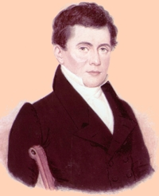

Joseph Henry
Joseph Henry was born in Albany in December 1797. He was the son of Scottish emigres-turned-Albany residents William and Ann Alexander Henry. This younger son of a marginal southside family was sent to live with his grandparents in rural Saratoga County even before his father died in 1811.
In Galway, he received a basic education and was placed in a local store at age ten to learn business. He also was said to have been apprenticed to learn the trades of the watchmaker and jeweler.
He returned to Albany when he was fifteen already having displayed the intellect and curiosity of a scholar. He moved into the South Pearl Street home of his widowed mother.
He also found work as a tutor and surveyor. Interested in drama, he was an amateur actor.
In 1826, he was appointed to the faculty at his alma mater, the Albany Academy.
[ More to follow but please understand that the extraordinary career of this Albany boy is mostly beyond the scope of our study! ]
In May 1830, he married Harriet Alexander in Schenectady. She was the niece of his mother. They had four children.
In 1830, he was listed as a professor at the Academy on Fayette Street in the city directory. His widowed mother also lived at that address.
In 1832, he left Albany for Princeton University. In 1846, he was appointed secretary of the Smithsonian Institution in Washington.
Joseph Henry died in Washington, DC in May 1878.
Although among the most notable of native sons who became reknowned after they left Albany, his story is most significant in an early Albany context as a case of extreme upward mobility - laborer's son to world-class scientist!
{kind=link}
{kind=link}